目录：
约束（constraint）是构型空间上的一个标量函数，要求 X 限制在特定的等值面上。全局约束（如体积约束）确定一个超表面，即从构型空间中移除一个自由度。 水平集约束 作用于顶点时，例如 x^2 + y^2 = 4，实际上是对每个适用顶点分别施加一个约束。每个约束为每个适用的顶点移除一个自由度。所有约束超表面的交集称为"可行集"（feasible set），即满足所有约束条件的所有可能构型的集合。如果存在任何非线性约束（如弯曲壁面或体积约束），则可行集将是弯曲的。当表面移动时（例如通过 'g' 命令），运动方向的向量总是首先被投影为与可行集相切。然而，如果可行集是弯曲的，直线运动会略微偏离可行集。因此，每次运动后，X 会通过牛顿法被投影回可行集。
E(X+Y) = E0 + GT Y + 1/2 YT H Y + ...其中常数 E0 是原始能量，E0 = E(X)。 G 是一阶导数向量，即梯度，它是与 Y 或 X 同维的向量（从严格意义上说，GT 是一个 1-形式）。 这里 T 表示转置。 H 是二阶导数的方阵，即 Hessian 矩阵。 Hessian 矩阵自动是一个对称矩阵。梯度 G 确定了能量的最佳线性近似，而 Hessian 矩阵 H 确定了最佳二次近似。
正定性。 如果二次项 1/2 YT H Y 对于任何非零 Y 始终为正，则称 H 为正定的。 在平衡点处，这意味着该点是严格的局部极小值；这是极小值二阶导数检验的多变量版本。如果二次项为零或为正，则 H 是半正定的。此时无法得出关于局部极小值的结论，因为三阶项可能阻止这一点。如果二次项既有正值又有负值，则 H 是不定的。
约束条件。如果表面上存在约束，则扰动向量 Y 被要求与构型空间中的可行集相切。可行集的曲率会对 H 产生影响，但这由 Evolver 自动处理。这种影响源于运动后投影回可行集时能量的微小变化。这不影响梯度，但确实影响 Hessian 矩阵。特别是，如果 Q 是全局约束的 Hessian 矩阵，q 是该约束的拉格朗日乘子，则调整后的能量 Hessian 矩阵为 H - qQ。因此，在存在全局约束时，需要先执行 'g' 步来计算拉格朗日乘子，然后才能计算任何 Hessian 矩阵。
具有特征值 q 的特征向量 Q 的另一种等价定义是
H Q = q Q.这在特征向量基下是显然的，但在任意基下用于定义特征向量。
指数与惯性。 H 的负特征值的个数称为 H 的指数（index）。 负特征值、零特征值和正特征值的个数组成的三元组称为 H 的惯性（inertia）。也可以相对于某个值 c 来讨论惯性，即 H-cI 的惯性，也就是小于 c 的特征值个数、等于 c 的特征值个数和大于 c 的特征值个数。 Sylvester 惯性定律指出，如果 P 是与 H 同维的非奇异矩阵，则矩阵
K = P H PT具有与 H 相同的惯性，尽管特征值不同。Evolver 可以将 Hessian 矩阵分解为如下形式
H = L D LT其中 L 是下三角矩阵，D 是对角矩阵。因此，可以通过计算 D 对角线上的符号来获得 H 的惯性。相对于 c 的惯性可以通过分解 H-cI 来获得。
与特定特征值关联的特征向量构成一个子空间，其维度称为该特征值的"重数"（multiplicity）。 体积约束。如果表面受到体积约束或命名量约束，则在计算特征值和特征向量时会将这些约束考虑在内。特别是，当通过向量场定义扰动时，在投影结束时会进行向约束的投影。因此，对于非线性体积约束（通常是这种情况），添加体积约束不同于在无约束 Hessian 矩阵上相对于线性子空间取特征值。有时添加约束可能比不加约束时具有更低的最小特征值。
grad E = H Y.因此，如果我们沿特征向量方向移动，
grad E = H Q = q Q.注意，力恰好与扰动方向对齐。由于力是梯度的负值，如果 q 为正，力将使表面恢复到平衡状态（稳定扰动）；如果 q 为负，力将导致扰动增长（不稳定扰动）。因此，每个特征向量代表一种扰动模式。此外，不同模式独立地增长或衰减，因为在特征向量基下 Hessian 矩阵是对角的，没有连接不同模式的交叉项。
eigenprobe c"。
例如，"eigenprobe 1"
将报告小于 1 的特征值个数、等于 1 的特征值个数和大于 1 的特征值个数。例如，假设我们使用 cube.fe，
执行 "r; r; g 5; eigenprobe 1"。我们将得到
Vertices: 50 Edges: 144 Facets: 96 Bodies: 1 Facetedges: 288 Element memory: 39880 Total data memory: 294374 bytes. Enter command: r Vertices: 194 Edges: 576 Facets: 384 Bodies: 1 Facetedges: 1152 Element memory: 157384 Total data memory: 422022 bytes. Enter command: g 5 5. area: 5.35288108682446 energy: 5.35288108682446 scale: 0.233721 4. area: 5.14937806689761 energy: 5.14937806689761 scale: 0.212928 3. area: 5.04077073041990 energy: 5.04077073041990 scale: 0.197501 2. area: 4.97600054126748 energy: 4.97600054126748 scale: 0.213378 1. area: 4.93581733363156 energy: 4.93581733363156 scale: 0.198322 Enter command: eigenprobe 1 Eigencounts: 18 <, 0 ==, 175 >这意味着 Hessian 矩阵有 18 个小于 1 的特征值，没有等于 1 的特征值， 175 个大于 1 的特征值。注意特征值的总数等于表面的总自由度数，在本例中为
(# 顶点数)-(# 约束数) = 194 - 1 = 193 = 18+175其中约束是体积约束。为什么每个顶点只有一个自由度而不是三个，这将在下面的 normal_motion 部分中解释。
ritz(c,n)"，其中 c 是探测值，n 是所需的特征值个数。
例如，用 "g 5; r; g 5; r; g 5" 演化 cube.fe，
然后执行 "ritz(0,5)"。
你应该得到如下输出：
Enter command: ritz(0,5) Eigencounts: 0 <, 0 ==, 193 > 1. 0.001687468263013 2. 0.001687468263013 3. 0.001687468263013 4. 0.2517282974725 5. 0.2517282974731 Iterations: 710. Total eigenvalue changes in last iteration: 4.0278891e-013输出的第一行是惯性，与 eigenprobe 完全相同。然后是算法找到的特征值，通常按远离探测值的顺序排列。
ritz 的工作原理：对于 ritz(c,n)，Evolver 创建一个随机的
n 维子空间并对其应用移位逆迭代，即反复对子空间应用 (H - cI)-1
并进行正交化。H 的靠近 c 的特征值对应于 (H - cI)-1 的大特征值，
因此相应的特征向量分量在每次逆迭代中以较大因子增长。
Evolver 在特征值收敛到机器精度时报告它们。当所有所需特征值都收敛时（如一次迭代中特征值的总变化小于 1e-10），
迭代结束并打印结果。精度较低的值会被特别显示，以表明它们尚未收敛到机器精度。你可以通过按中断键（通常是 CTRL-C）来中断 ritz，它将报告当前的特征值近似值。
注意：最好使用低于最小特征值的探测值，这样 H-cI 是正定的。这使得分解在数值上更加稳定。
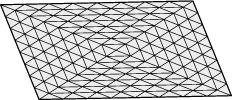
ritz(0,10)"。
Enter command: ritz(0,10) Eigencounts: 0 <, 0 ==, 25 > 1. 0.585786437626905 2. 1.386874070247247 3. 1.386874070247247 4. 2.000000000000000 5. 2.585786437626905 6. 2.585786437626906 7. 2.917607799707606 8. 2.9176077997076 9. 3.4142135623733 10. 4.0000000000000看起来与我们的预期不完全一致。不过它确实在正确的位置有重数为二的特征值。也许我们还没有细化够。再次细化并执行 "
ritz(0,10)"。你将得到
Enter command: ritz(0,10) Eigencounts: 0 <, 0 ==, 113 > 1. 0.152240934977427 2. 0.375490214588449 3. 0.375490214588449 4. 0.585786437626905 5. 0.738027372604331 6. 0.738027372604331 7. 0.927288973154334 8. 0.927288973154335 9. 1.225920309355705 10. 1.2259203093583情况变得更糟了！特征值都大幅缩小了！它们没有收敛！这是怎么回事？下一节将解释原因。
/
<f,g> = | <f(x),g(x)> dA.
/
在离散项中，内积的形式是一个方阵 M，使得对于向量 Y,Z 有 <Y,Z> = YT M Z。我们希望这个内积近似于关于面积的积分。有了这样的 M，特征值方程变为
H Q = q M Q.正式地，Q 现在被称为"广义特征向量"，q 是"广义特征值"。但我们将省略"广义"一词。这个方程的直观解释是作为牛顿运动定律，
Force = Mass * Acceleration其中 HQ 是力，M 是质量，qQ 是加速度。换句话说，在一个特征模态中，加速度与扰动成正比。
Evolver 的切换命令
"linear_metric"
将 M 包含在特征向量计算中。有两种度量可用。在最简单的"星形度量"中，M 是对角矩阵，与每个顶点关联的"质量"是相邻三角面面积的 1/3（1/3 是因为每个三角面由 3 个顶点共享）。另一种"线性度量"通过线性插值将函数从顶点扩展到三角面，并关于面积进行积分。默认情况下，"linear_metric"使用两者 50/50 的混合，这似乎效果最好。更详细的讨论见下面的
特征值精度 部分。线性度量的比例可以通过将比例赋给内部变量
linear_metric_mix 来设置。
默认情况下，linear_metric_mix 为 0.5。然而，在二次模式下，只使用二次插值度量，因为星形度量将收敛限制在 h2 阶，而二次插值度量允许 h4 阶收敛。
示例：运行 square.fe，细化两次。执行 "linear_metric" 和
"ritz(0,10)"。
Enter command: linear_metric Using linear interpolation metric with Hessian. Enter command: ritz(0,10) Eigencounts: 0 <, 0 ==, 25 > 1. 2.036549240354335 2. 4.959720306550875 3. 4.959720306550875 4. 7.764634143334637 5. 10.098798069316683 6. 10.499717069102575 7. 12.274525789880887 8. 12.274525789880890 9. 15.7679634642721 10. 16.7214142904405 Iterations: 127. Total eigenvalue changes in last iteration: 1.9602375e-014再次细化后：
Enter command: ritz(0,10) Eigencounts: 0 <, 0 ==, 113 > 1. 2.009974216370147 2. 4.999499042685446 3. 4.999499042685451 4. 7.985384943789077 5. 10.090156419079085 6. 10.186524915471155 7. 13.008227978344527 8. 13.008227978344527 9. 17.242998229925817 10. 17.2429982299600 Iterations: 163. Total eigenvalue changes in last iteration: 1.9186042e-014这看起来收敛性好多了。
使用 linear_metric 不会改变 Hessian 矩阵的惯性，这是由 Sylvester 惯性定律保证的。因此，这个故事的寓意是：如果你只关心稳定性，你不需要使用 linear_metric。如果你确实关心特征向量的实际值，并且希望它们相对独立于你的三角剖分，那么使用 linear_metric。
hessian_normal off" 来
启用所有自由度。现在
"eigenprobe 0" 显示 50 个零特征值：
Enter command: hessian_normal off hessian_normal OFF. (was on) Enter command: eigenprobe 0 Eigencounts: 0 <, 50 ==, 25 >对于弯曲表面，额外的特征值通常不会为零，但它们都接近零，有正有负，这可能真的会把事情搞糟。因此，
hessian_normal 的默认值为开启状态。这个故事的寓意是：始终保持 hessian_normal 处于开启状态，除非你真的非常清楚自己在做什么。
在某些表面上，例如具有三叉交汇线和四面体顶点的肥皂膜，有些顶点没有自然的法向量。Evolver 的 hessian_normal 模式为这些点分配法子空间，使得三叉线上的顶点可以在垂直于三叉线的二维法空间中移动，四面体顶点可以在所有三个维度中移动。
当 hessian_normal 关闭时可能出现负的额外特征值的原因是，对于给定的三角剖分，人们很少有最佳的顶点位置，即使其整体形状非常接近最优。顶点似乎总是想侧向滑动以节省非常非常少量的能量。以这种方式节省的能量通常远小于离散近似带来的误差，因此通常不建议尝试获得绝对最佳的顶点位置。
hessian_normal 有一个效果可能一开始有点令人困惑。很多时候，已知表面具有零特征值的模态；例如平移或旋转模态。然而，没有报告零特征值。例如，对于上面找到的立方体特征值，
Eigencounts: 0 <, 0 ==, 193 > 1. 0.001687468263013 2. 0.001687468263013 3. 0.001687468263013 4. 0.2517282974725 5. 0.2517282974731人们可能期望从三个平移模态和三个旋转模态中得到 6 个零特征值。但旋转模态被 hessian_normal 限制消除了。三个平移模态的特征值接近 0，但不完全是 0，因为法向运动可以近似立方体的平移，但不能精确实现。有效的平移源于顶点在一个半球上向内移动而在另一个半球上向外移动。这会扭曲三角剖分，提高能量，因此特征值为正。这种效应随着细化而减小。
有些时候法向方向不是人们想要的方向。如果知道扰动方向，可以使用 hessian_special_normal 功能来使用该方向代替默认法向。请注意， hessian_special_normal 也适用于由 vertex_normal 属性计算的法向量以及常规 vertex averaging（顶点平均）使用的法向量。
| 选项 | 操作 |
| 1 | 初始化 Hessian 矩阵。 |
| Z | 执行多特征对的 ritz 计算。这会提示输入一个移位值。选择一个接近你想要的特征值的值，最好低于它们，这样移位后的 Hessian 矩阵是正定的。这还会提示输入要计算的特征对数量。特征值近似值在收敛时被打印出来。你可以通过键盘中断来停止迭代。 |
| X | 选择你想要用于移动的特征向量。你可以通过在 Z 选项的列表中的编号来输入特征向量。作为一个特别有用的功能，当一个特征值有多个特征向量时，你可以将向量输入为特征向量的线性组合，例如 "0.4 v1 + 1.3 v2 - 2.13 v3"。 |
| 4 | 移动。这会提示你输入一个缩放因子。1 是一个合理的首次猜测。如果太大或太小，选项 7 可以恢复原始表面，这样你可以再次尝试选项 4。 |
| 7 | 恢复原始表面。除非你希望在退出 hessian_menu 时表面保持移动后的状态，否则请执行此操作。可以通过再次执行选项 X 来重复循环。 |
| q | 退出回到主提示。表面不会自动恢复到原始状态。如果你不想保留更改，请在退出前务必执行选项 7！ |
正方形示例。 让我们看看如何显示正方形的低特征模态，如下图所示：
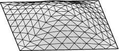
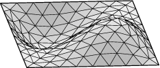
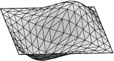
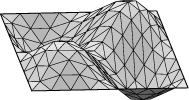
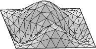
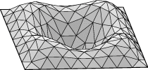
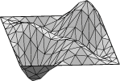
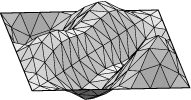
欣赏完该模态后，执行选项 7 恢复表面。然后再次执行选项 4，步长为 -1 以查看相反的模态。执行选项 7 恢复原始状态。通过执行选项 x、4 和 7 的循环，你应该能够查看 ritz 命令找到的所有特征模态。
用于移动顶点的特征向量分量存储在 v_velocity 顶点向量属性中，因此你可以在退出 hessian_menu 后访问它们，例如
set vertex __x __x + 0.5*v_velocity粗糙的特征向量：如果你有体积约束并做一个大的移动来显示特征向量，你可能会得到一个凹凸不平的形状，而不是你期望的光滑形状。这是因为表面在沿特征向量方向移动后被投影到体积约束上。特征向量本身是光滑的，但投影回目标体积使用的是体积梯度，它非常依赖于三角剖分，不一定是光滑的。要在没有体积投影的情况下查看特征向量，你可以在命令提示符下执行
set vertex __x __x + 0.5*v_velocity
Hessian_menu 还可以做各种其他事情，主要用于我的调试用途。有志于成为专家的人可以查阅 hessian_menu 命令文档，了解使用 Hessian 矩阵的更多方法。
假设表面能量的二次近似是一个好的近似。那么我们可以通过求解使能量梯度为零的运动 Y 来找到平衡点。回想一下 G 和 H 仅依赖于 X，能量梯度作为 Y 的函数为
grad E = GT + YT H.所以我们希望 GT + YT H = 0，或者转置后，
G + H Y = 0.解出 Y 得到
Y = - H-1 G.这实际上是应用于梯度的牛顿-拉夫森法（Newton-Raphson Method）。Evolver 的 "hessian" 命令执行此计算和运动。当表面接近平衡点时效果最好。平衡点是极小值、鞍点还是极大点都没有关系。然而，距离确实很重要。记住我们处理的是数千个变量，你不必离平衡点很远，平衡点就可能超出了二次近似的范围。当它确实有效时，
hessian 将非常快速地收敛，最多 4 到 5 次迭代。
示例：从立方体数据文件 cube.fe 开始。
用 "r; g 5; r; g 5;" 演化。这非常接近平衡点。执行 hessian 几次就可以达到平衡点：
Enter command: hessian 1. area: 4.85807791572284 energy: 4.85807791572284 Enter command: hessian 1. area: 4.85807791158432 energy: 4.85807791158432 Enter command: hessian 1. area: 4.85807791158431 energy: 4.85807791158431因此 Hessian 迭代在两步内收敛。此外，这是一个局部极小值而不是鞍点，因为 Evolver 没有报告非正定 Hessian 的警告。
注意：hessian 命令可以在不定 Hessian 上工作，只要没有太接近零的特征值。关于非正定的警告是为了提供信息；它并不意味着 hessian 失败了。
hessian_seek 命令执行与 hessian 命令相同的计算，不同之处在于它沿运动方向进行线搜索以找到最低能量，而不是直接跳到假定的平衡点。基本上，它与优化模式下的 'g' 命令做同样的事情，只是使用 hessian 解代替梯度。
立方体示例。 运行 cube.fe，执行 "g; r; hessian_seek""。
Enter command: g 0. area: 5.13907252918614 energy: 5.13907252918614 scale: 0.185675 Enter command: r Vertices: 50 Edges: 144 Facets: 96 Bodies: 1 Facetedges: 288 Element memory: 40312 Total data memory: 299082 bytes. Enter command: hessian_seek 1. area: 4.91067149153091 energy: 4.91067149153091 scale: 0.757800这是一个比较简单的示例，因为
hessian 在这里不会发散。但一般来说，当不确定 hessian 是否有效时，使用 hessian_seek。如果 hessian_seek 报告的缩放因子接近 1，那么使用 hessian 来获得最后几位小数的收敛精度可能是安全的。Hessian_seek 在最终收敛时不能像 hessian 那样精确，因为 hessian_seek 使用能量差值，这在极小值附近非常小。
Hessian_seek 即使在 Hessian 矩阵不是正定时也可以安全使用。我有时发现即使表面离极小值很远，它也出奇地有效。
hessian_menu 手动完成，但
saddle
命令将其全部打包得很好。它找到最负的特征向量并在该方向上进行线搜索以找到最低能量。
要查看示例，运行 catbody.fe 并执行以下演化：
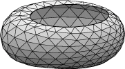
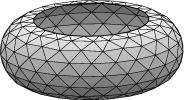
u body[1].target := 4 g 5 r g 5 V V r g 10 eigenprobe 0 saddle
saddle 之后需要进一步演化以找到最低能量表面；saddle 只是提供一个初始推动力。不需要先运行 "eigenprobe 0"；如果 saddle 没有找到负特征值，它会告知这一点并不移动表面就退出。
Saddle 即使在离平衡点很远时也可以安全使用。
通过使用 ritz 命令监视特征值来检测不稳定性。作为一个例子，考虑一个在圆柱体外部的液环，体积不断增加直到对称环变得不稳定。这在数据文件 catbody.fe 中设置，它只是在 cat.fe 中从三角面定义了一个体。运行 catbody.fe 并执行以下初始演化：
u g 5 r g 5 body[1].target := 2 g 5 r body[1].target := 3 g 5 hessian hessian linear_metric ritz(0,5)这给出特征值
Eigencounts: 0 <, 0 ==, 167 > 1. 0.398411128930840 2. 0.398411128930842 3. 1.905446082321839 4. 1.905446082321843 5. 4.4342055632012注意我们仍然处于稳定的正定情况，但最低特征值已经足够接近零，我们需要小心地增加体积。尝试增加 0.1：
body[1].target += 0.1 g 5 hessian hessian ritz(0,5) Eigencounts: 0 <, 0 ==, 167 > 1. 0.287925880010193 2. 0.287925880010195 3. 1.775425717998147 4. 1.775425717998151 5. 4.2705109310529一些线性插值建议尝试增加 0.3：
body[1].target += 0.3 g 5 hessian hessian hessian ritz(0,5) Eigencounts: 0 <, 0 ==, 167 > 1. 0.001364051154697 2. 0.0013640511547 3. 1.4344757227809 4. 1.4344757227809 5. 3.8350719808531所以我们现在非常非常接近临界体积。鉴于这里的三角剖分比较粗糙，进一步缩小临界体积可能不值得，而应该细化并重复该过程。但现在保持这个表面运行以用于下一段。
演化到不稳定领域
通常这些表面只有少数几个不稳定模态。其思路是接近所需的平衡点并使用
hessian 来达到它。
不应使用常规的 'g' 梯度下降
迭代。要改变表面，即沿着相图中的平衡曲线前进，
对控制参数做小的更改，每次都使用几次 hessian 迭代重新收敛。需要特别注意分岔点附近，因为有多条平衡曲线在那里相交。当接近分岔点时，尝试跳过它，这样就没有歧义地知道你沿着哪条曲线前进。接近分岔点可以通过监视特征值来检测。当表面引入新的不稳定模态时，一个特征值会跨越 0。
示例：Catbody.fe，续。在上面找到的 catbody.fe 近临界状态下，以 .1 的步长增加体体积，每步运行 hessian 几次：
body[1].target += .1 hessian hessian hessian hessian body[1].target += .1 hessian hessian hessian hessian body[1].target += .1 hessian hessian hessian hessian所以只要保持足够接近平衡点，
hessian 本身就足以进行演化。
演化不稳定表面的其他方法：
这里的问题是离散表面的特征值对光滑表面特征值的近似程度。这在确定表面的稳定性时很重要。我在可以得到解析结果的情况下展示一些比较。所有比较都在 hessian_normal 模式和 linear_metric 下进行。
关于精度的任何一般性定理都很困难，因为以下任何情况都可能出现：
示例：固定边界的边长为 pi 的平面方形膜。
光滑特征值：n2 + m2，
或 2,5,5,8,10,10,13,13,17,17,18,...
64 facets:
linear_metric_mix:=0 linear_metric_mix:=.5 linear_metric_mix:=1
1. 1.977340485013809 2.036549240354332 2.098934776481970
2. 4.496631115530167 4.959720306550873 5.522143605551107
3. 4.496631115530168 4.959720306550873 5.522143605551109
4. 6.484555753109618 7.764634143334637 9.618809107463317
5. 8.383838160213188 10.098798069316681 12.451997407229225
6. 8.958685299442784 10.499717069102577 12.677342602918362
7. 9.459695221455723 12.274525789880890 17.295660791788656
8. 9.459695221455725 12.274525789880887 17.295660791788663
9. 11.5556960351898 15.7679635512509 23.585015056138165
10. 12.9691115062193 16.7214142904454 23.5850152363232
256 facets:
linear_metric_mix:=0 linear_metric_mix:=.5 linear_metric_mix:=1
1. 1.994813709598124 2.009974216370146 2.025331529636075
2. 4.869774462491779 4.999499042685448 5.135641457408189
3. 4.869774462491777 4.999499042685451 5.135641457408191
4. 7.597129628414264 7.985384943789075 8.411811839672165
5. 9.571559289947587 10.090156419079083 10.639318311067063
6. 9.759745949169531 10.186524915471141 10.665025703718413
7. 12.026114091326091 13.008227978344539 14.149533399632906
8. 12.026114091326104 13.008227978344539 14.149533399632912
9. 15.899097189772919 17.242998229925817 18.8011199268796
10. 15.8990975402264 17.2429983900303 18.8011200311777
1024 facets:
linear_metric_mix:=0 linear_metric_mix:=.5 linear_metric_mix:=1
1. 1.998755557957786 2.002568891165917 2.006394465437547
2. 4.967163232244397 5.0005039961225 5.0342462883517
3. 4.967163232244401 5.0005039961225 5.0342462883517
4. 7.897718646133286 7.9990889953386 8.1028624365882
5. 9.891301374223204 10.0268080202750 10.1637119963890
6. 9.941758861492074 10.0519390576227 10.1658353297015
7. 12.750608847206168 13.0141591049184 13.2878054981609
8. 12.750608847206173 13.0141591049184 13.2878054981609
9. 16.718575011911319 17.0839068189583 17.4625185925160
10. 16.7185751321348 17.0839069326949 17.4625186893608
一个有趣的事实是，特征值 5 和 6 在光滑极限下是相同的，但在离散近似中被分裂了。这是因为特征值 10 的二维特征空间可以有一个由两个扰动组成的基，每个扰动都具有正方形的对称性，但受离散化的影响不同。
示例：固定体积的半径为 1 的球体。
解析特征值：(n+2)(n-1), n=1,2,3,...
重数为：0,0,0,4,4,4,4,4,10,10,10,10,10,10,10
Linear mode, linear_metric_mix:=.5.
24 facets 96 facets 384 facets 1536 facets
1. 0.3064952760319 0.1013854786956 0.0288140848394 0.0078006105505
2. 0.3064952760319 0.1013854786956 0.0288140848394 0.0078006105505
3. 0.3064952760319 0.1013854786956 0.0288140848394 0.0078006105505
4. 2.7132437122162 3.9199431944791 4.0054074145696 4.0036000699357
5. 2.7132437122162 3.9199431944791 4.0054074145696 4.0036000699357
6. 2.7132437122162 3.9199431944791 4.0054074145696 4.0036000699357
7. 3.6863290283837 4.3377418342267 4.1193008989205 4.0347069118257
8. 4.7902142880145 4.3377418342267 4.1193008989205 4.0347069118257
9. 4.7902142880145 9.0031399793203 9.9026247196089 9.9870390309740
10. 6.7380098215325 9.7223042306475 10.0981057119891 10.0387404054572
11. 6.7380098215325 9.7223042306545 10.0981057120367 10.0387404054607
12. 6.7380098215325 9.7223042307334 10.0981057121432 10.0387404055516
13. 8.6898276285107 9.9763109502799 10.1298354477703 10.0466252566958
In quadratic mode (net 4 times as many vertices per facet)
24 facets 96 facets 384 facets 1536 facets
1. 0.0311952242811 0.0025690857791 0.0002802874477 0.0000358409262
2. 0.0311952242812 0.0025690857791 0.0002802874477 0.0000358409262
3. 0.0311952242812 0.0025690857791 0.0002802874477 0.0000358409262
4. 4.2142037235384 4.0160946848738 4.0009978658738 4.0000515986034
5. 4.2142037235384 4.0160946848738 4.0009978658738 4.0000515986034
6. 4.2564592100813 4.0222815310390 4.0014892600742 4.0000883321792
7. 4.2564592100813 4.0222815310390 4.0014892600742 4.0000883321792
8. 4.2564592100813 4.0222815310390 4.0014892600742 4.0000883321792
9. 9.9900660130172 10.1007993043211 10.0076507048408 10.0004402861468
10. 9.9900660130172 10.1007993043271 10.0076507049338 10.0004402861545
11. 9.9900660130173 10.1007993047758 10.0076507050506 10.0004402861829
12. 12.1019587923328 10.1262981041797 10.0089922470136 10.0005516796159
13. 12.1019587923350 10.1262981042009 10.0089922470510 10.0005516796196
14. 12.1019587927495 10.1262981044110 10.0089922470904 10.0005516797052
15. 12.6934178610912 10.1478397915001 10.0106695599620 10.0007050467653
不是所有能量都有内置的 Hessian 矩阵。如果 Evolver 报告缺少某种能量的 Hessian，你要么必须放弃使用 hessian，要么找到一种方法用具有 Hessian 的能量来表述你的问题。
Evolver 内置了三种稀疏矩阵分解方法：YSMP（Yale 稀疏矩阵包）、我自己设计的最小度算法，以及
METIS 递归二分法。
ysmp 和
metis_factor 切换开关可用于控制使用哪种方法。
Metis 总体上是最好的，特别是在大表面上，但需要单独下载和编译 METIS 库（但这很容易；请参阅 安装 说明）。